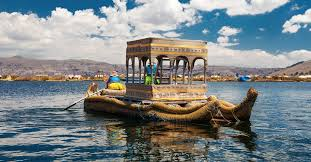

El lago Titicaca se extiende por la frontera entre Perú y Bolivia en la cordillera de los Andes y es uno de los lagos más grandes de Sudamérica y el cuerpo de agua navegable más alto del mundo. Se dice que es la cuna de los incas y cuenta con varias ruinas. Sus aguas son conocidas por ser tranquilas y dar un reflejo brillante. En sus alrededores, se ubica la Reserva Nacional del Titicaca que alberga especies acuáticas poco comunes, como las ranas gigantes.
El lago navegable más alto del mundo es un espectáculo por donde se le mire. Rodeado por una tupida vegetación donde prevalece la totora, está habitado por diversas islas, y cada una de ellas tiene una historia distinta que contar.
Taquile, Amantaní, las islas flotantes de Uros, ofrecen experiencias donde es posible vivir directamente la tradición y costumbres de un pueblo que ha sabido rescatar lo mejor de su entorno y coexistir armoniosamente con él.
|  |